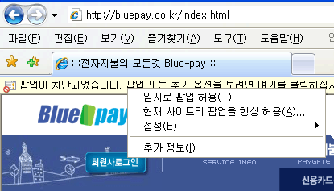

|
결제창(팝업)이 보이지 않는 경우 최근 Microsoft 社에서 배포한 윈도우 XP 서비스팩 2 (SP2)를 설치하신 고객님들께서는 서비스팩 2 의 팝업차단 기능 때문에 쇼핑몰의 일부 서비스(전자결제창)를 이용하시는데 불편함을 겪으실 수 있습니다. 다음과 같은 순서로 팝업차단 기능을 설정, 변경해 주시면 정상적으로 쇼핑몰을 이용하실 수 있습니다. "익스플로러 > 도구 > 팝업 차단 > 현재사이트의 팝업을 항상 허용 (A)"을 선택하세요. |
 |